제 1 장 사례연구 배경 및 목적
1.1 소재부품장비 산업
대한민국은 전 세계 10 위 수준의 경제 규모를 가지고 있으며, 1 인당 국민 소득은 OECD 국가 중 18 위에 위치할 정도로 경제 강국으로 자리매김하였다 ( 국가예산정책처, 2022). 625 전쟁의 폐허를 딛고 정부 주도하에 경공업 위주의수출 주도형 전략을 추진하여 섬유, 가발, 신발 등을 제조 및 수출하며 본격적인 경제성장에 돌입하였고, 점차 철강, 자동차, 조선, 반도체 등 고부가가치 제품 제조로확대하며 한강의 기적을 넘어 오늘날 대한민국은 명실상부한 경제 강국 반열에올랐다 (대한상공회의소, 2023).
제조업은 여전히 대한민국 경제 성장의 근간이자 미래 성장 동력이다.
대한민국의 전체 GDP 에서 제조업이 차지하는 비중이 약 28% 수준으로 산업 중가장 높은 비중을 나타내고 있으며, 주요 제조 강대국인 독일, 일본, 미국 등에비해서도 대한민국에 제조업은 중요한 먹거리 산업이자 최고의 일자리 창출 산업, 외화벌이 수단 그리고 내수 경제 촉진의 근간이 되는 핵심 산업이다 (송경호, 2022).
[그림 1] 주요 국가 GDP 대비 제조업 비중 (출처: 기획재정부)
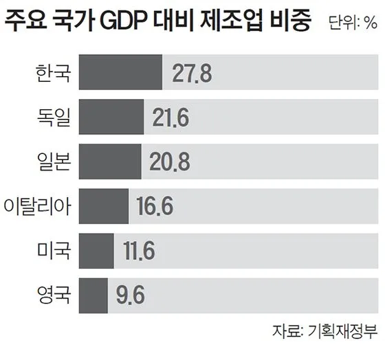
제조업 중에서도 소재부품장비 일명 소부장이라고 불리는 산업은 제조업의가치사슬의 뿌리이자 중심으로 완제품의 품질과 수준을 결정하고, 제조업의
경쟁력뿐만 아니라 국가별 패권 전쟁이 한참 진행 중인 현 시점에서 국가 안보에도매우 중요한 역할을 하는 산업이다. 대한민국의 소재부품장비 산업은 전체 제조업생산액의 약 52%를 차지하고, 전체 수출액의 54%를 담당할 만큼 제조업 내 핵심산업인 반면에 대한민국의 소재부품장비 산업은 특정 국가로부터 수입 의존도가매우 높다는 치명적인 단점을 가지고 있다 (산업통상자원부, 2020). 특히 지난 2019 년 일본의 반도체 핵심 소재 3 가지 품목에 대한 수출 규제로 인해 특정 국가의 특정품목에 대한 기형적 의존도의 위험성이 부각되기도 하였다. 또한, 미중 무역갈등으로 인한 보호무역주의 그리고 COVID-19 로 부각된 지역 가치사슬(Regional Value Chain)의 중요성으로 대한민국 산업의 중심인 소재부품장비 산업 경쟁력에대한 국가적 관심이 크게 높아지고 있는 상황이다.
이에 대한민국 정부는 소재부품장비 산업의 자립화를 통한 글로벌 경쟁력 확보를위한 범국가적 차원의 지원 정책과 민간 전략에 대한 청사진을 펼치는 계기가 되었고
[그림 2]와 같이 2019 년 기준 100 대 핵심 품목 수입의존도가 약 31%에서 2021 년
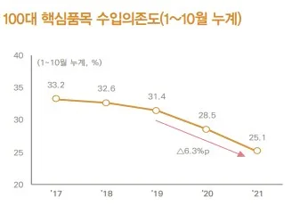
기준 약 25%까지 감소하며 소재부품장비 산업의 자립화 관점에서 효과를 보았다.
[그림 2] 소재부품장비 핵심 품목 수입의존도 (출처: 중앙일보, 한겨례)
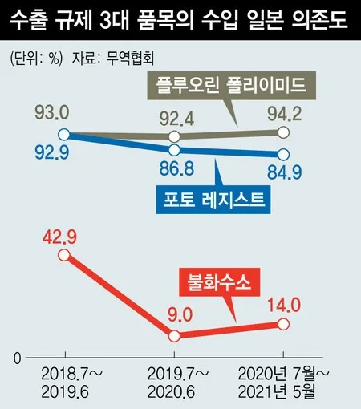
소재부품장비 산업의 자립화를 넘어 산업 전반의 경쟁력 강화를 통한 글로벌화를위해 대한민국 정부는 자금, 입지, 세제, 규제 특례 지원 등을 통한 기존 기업 향연구개발(R&D) 지원뿐만 아니라 연기금, 모태펀드, 민간 PEF, 개인 등이 참여하는대규모 투자 펀드를 조성하여 잠재력 있는 스타트업을 육성하는 정책 역시 펼치고
있다 (대한민국 정책브리핑, 2020).
1.2 소재부품장비 산업 내 벤처기업의 중요성 및 한계점
소재부품장비 산업은 중소기업 비중이 높은 산업으로서 중소기업의 역량이 곧대한민국 소재부품장비 산업의 경쟁력이다. 하지만 대한민국의 소재부품장비관련 중소기업의 기술경쟁력은 선진국 대비 낮은 수준으로 평가받고 있다. 주된이유는 지난 60 년간 압축적인 경제 성장을 위해 시장은 크지만 기술 난이도가상대적으로 낮은 범용 제품에 집중한 결과이자 자립화를 위한 산업 구조 때문이다. 실제로 일본 등 시장이 크진 않아도 필수재 시장을 독점하는 구조를 가진 주요 제조강대국 소재부품장비 산업의 무역수지는 항상 흑자를 유지하고 있으나, 대한민국소재부품장비 산업의 무역수지는 항상 적자다 (산업통상자원부, 2020).
[그림 3] 한국, 중국, 일본 소재부품장비 산업 시장 포지션
(출처: 산업통상자원부)
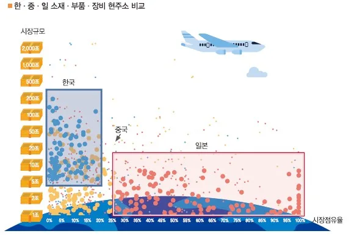
지난 2019 년 일본의 수출 규제 촉매제가 되어 이러한 대한민국 소재부품장비산업의 구조적 제약사항을 자립화를 넘어 글로벌화를 통해 해결하고자 정부는 소재 부품장비 분야 대중소기업의 협력을 이끌며 히든챔피언을 골라내는 여러 지원정책을 펼치고 있다. 구체적으로 ‘강소기업 100,’ ‘스타트업 100’ 등의 정부 과제
지원 프로그램을 통해 스타트업을 포함한 중소기업에 연구개발, 기술이전, 수요기술발굴, 성장자금 지원 펀드 조성 등 다방면의 지원 정책을 기획 및 운영하고 있다 ( 중소벤처기업부, 2020).
정부가 스타트업을 포함한 중소 벤처기업 육성을 중점 과제로 정책화하는 이유는소재부품장비 산업은 기술 혁신 속도가 매우 빠르고 기술 집약도가 매우 높은성격의 산업이기 때문이다. 기존 기업은 기존 기술과 사업 모델을 강화하는 정도의존속적 혁신을 추구하도록 모든 자원, 프로세스 그리고 기업의 가치가 반복적으로수행되도록 이미 구조화 되어있기 때문에 기술의 진보와 확산의 속도가 빠른 소재 부품장비 산업에서 파괴적 혁신에 대응하기 쉽지 않다. 따라서, 소재부품장비자립화를 넘어 글로벌 시장에서의 경쟁력을 확보하기 위해서는 Clayton Christensen 의 저서 ‘The Innovator’s Dilemma’에서 주장하는 파괴적혁신기업의 탄생이 필요한 것이고, 혁신 기술 개발을 통해 새로운 시장을 창출하거나혹은 기술 성능의 축을 변환시켜 기존 시장에 침투하는 성향이 짙은 벤처기업의역할이 글로벌화가 중요한 현시점에서 매우 중요하다. 실제로 2021 년 대비 2022 년 소재부품장비 분야 벤처기업에 대한 투자가 약 71% 증가하였고, 코스닥기술특례 제도 하에 소재부품장비 패스트트랙 분야가 신설되며 2022 년 말까지 약 27 개 사가 소재부품장비 트랙을 통해 성공하였다 (한국금융 2023, 더벨 2023). 하지만 기술 혁신 속도가 빠르고 높은 기술 집약도 성격이 짙은 소재부품장비산업에서 규모가 작은 벤처기업이 진입하고 성장하는데 매우 도전적인 것이현실이다. 기술 집약도가 높은 산업은 대규모 수준의 연구개발(R&D) 투자가선행된다는 특징이 있고, 자본력이 높을수록 그리고 전문 역량을 갖춘 유능한 인재가많을수록 유리한 산업이다. 유능한 인재와 풍부한 자원을 가지고 사업하는 기존대기업과 비교하였을 때, 매 순간 자원의 한계와 싸우는 벤처기업에는 선천적으로불리한 시장이다. 또한, 고도화된 기술을 다루는 B2B 기반의 산업 성격상 고객은구매에 보수적인 집단으로 구매 의사결정에 매우 신중하기 때문에, 초기 레퍼런스가전무한 벤처기업이 시장에 진입하기에 매우 제한적이다. 그뿐만 아니라 고객의보수적이고 빠르지 않은 구매 의사결정은 자원과 시간이 부족한 벤처기업에 역시굉장히 불리한 조건으로 타 산업 내 벤처기업과 비교하였을 때 소재부품장비산업에 도전하는 벤처기업이 성공하기에 선천적으로 불리한 환경이다.
1.3 사례연구 목적(Research Questions)
벤처기업이 도전하고 성공하기에 불리한 산업/시장 환경 속에서도 창업 4 년 만에글로벌 시장 점유율 1 위를 달성하고 16 년 연속 1 위 점유율을 유지하고 있는 기업이있어, 이번 사례 연구를 통해 소재부품장비 산업 내 B2B 벤처기업이 나아가야 할방향 및 전략에 대해 연구하고자 한다. 이를 위해, 다음과 같이 연구를 위한 Research Questions 를 도출하였다.
① 리소스가 제한적인 초기 벤처기업이 어떻게 창업 4 년 만에 글로벌 시장점유율 1 위를 달성할 수 있었는가? (시장 진입기)
② 글로벌 시장 점유율 1 위 유지 및 확장 요인은 무엇인가? (시장 확장기)
제 2 장 사례연구 대상 기업 및 산업
2.1 고영테크놀러지
앞서 1 장에서 다룬 소재부품장비 산업 내 벤처기업의 성장 한계점에도 불구하고창업한 지 4 년 만에 글로벌 시장 점유율 1 위를 달성하고 현재까지 약 16 년 동안시장 점유율 1 위를 유지하고 있는 고영테크놀러지에 대해 사례 연구를 하고자 한다.
[그림 4] 글로벌 SPI 및 AOI 시장 점유율 (출처: 한국기업데이터)
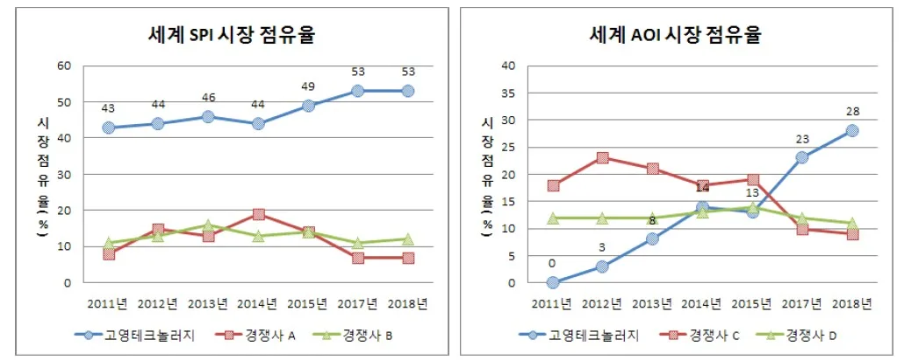
국내 1 세대 광학 및 Mechatronics 분야 연구자 고광일 대표는 2002 년 4 월세계 최초 그리고 세계 최고의 광학 기술과 Mechatronics 기술을 융합하여 기존 2D 기반 검사 장비 시장에 존재하던 unmet needs 를 충족하고자고영테크놀러지를 설립하였다. 고영테크놀러지의 기존 주요 사업 분야였던 3D 기반 검사 장비 외에도 수술용 로봇 및 스마트 팩토리 솔루션으로 확대하고 있다. 2022 년 기준 매출액은 약 2,750 억 수준이고 주로 3D 기반 SPI 장비 및 3D 기반 AOI 장비로부터 창출되었다. 고영테크놀러지는 창립 이례 단기간 내 빠른성장세를 보이며 2008 년 코스닥에 입성하였고, 2023 년 1 분기 기준 시가 총액이약 1 조를 상회하는 중견기업이다.
[그림 5] 고영테크놀러지 기업개요 (출처: 본인 작성)
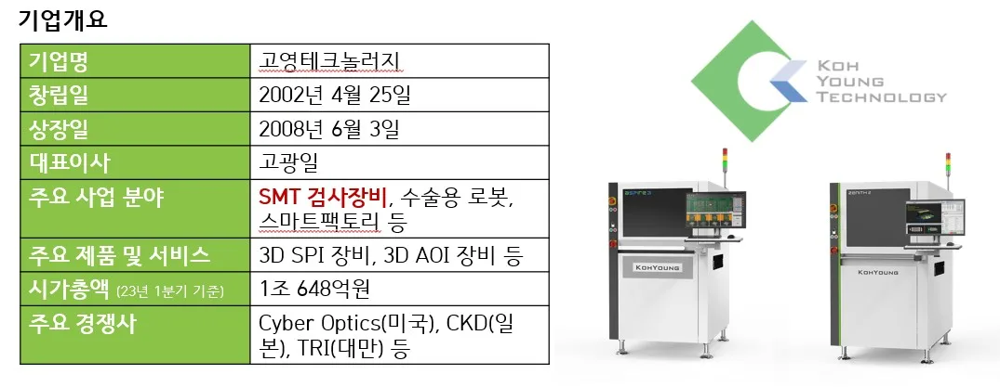
고영테크놀러지의 주요 사업 분야인 SMT 검사장비는 전자 제품을 정상적으로구동시키기 위해 꼭 필요한 부품 중 하나인 Printed Circuit Board (“PCB”)를검사하는 Solder Paste Inspection (“SPI”) 및 Automated Optical Inspection (“AOI”) 장비로 구분된다. 고영테크놀러지는 세계 최초 3D 기반 SPI 및 AOI 장비와함께 창업 이래 매년 급 성장하는 유니콘과 같은 역사를 자랑한다. 과거 연도별 매출추이를 [그림 6]를 통해 보면 코스닥 상장 전 ‘시장 진입기’에는 매년 CAGR 기준 102%로 고속 성장하였고, 상장 이후 ‘시장 확장기’에도 매년 30% 이상의 높은성장세를 보여주고 있다. 고영테크놀러지는 2002 년 창업 후 1 년 만에 세계 최초 3D 기반 SPI 검사장비를 상용화하였고, 창업 만 4 년 만인 2006 년에 해당 글로벌 시장점유율 1 위를 달성하였다. 글로벌 시장 점유율 1 위 달성 시 매출은 약 170 억
수준이었고, 상장 전까지 매출을 약 2 배 수준까지 끌어올리며 시장 내 1 위 점유율을계속 유지 및 확장하였다. 고영테크놀러지는 3D 기반 SPI 장비에 안주하지 않고지속된 신규 프로덕트를 위한 R&D 선행 투자로 2010 년 또 다른 세계 최초 프로덕트 (3D 기반 AOI 장비)를 상용화하는 데 성공하였다. 시장 규모가 SPI 장비 시장 대비 2 배 높다고 평가받는 AOI 시장에 3D 기반 프로덕트로 진입하며 고영테크놀러지는본격적인 고성장 열차에 올라타게 된다. 2009 년까지 200 억대 매출이 3 년 만에 1,000 억대를 돌파하였고, 글로벌 AOI 시장까지 석권하게 되며 고영테크놀러지는완벽한 J 커브 성장 신화를 보여주었다.
[그림 6] 고영테크놀러지의 발전 역사 (매출액에 따른 발전 구분) – 본인 작성
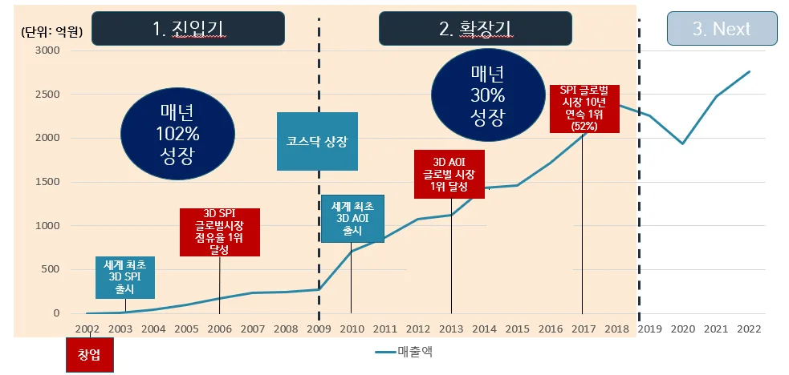
2.2 Surface Mount Technology(SMT) 검사 장비 산업
2.2.1 Surface Mount Technology(SMT) 공정
고영테크놀러지가 속한 Surface Mount Technology (“SMT”) 산업은 Printed Circuit Board (“PCB”)를 완성하는 공정이다. PCB 는 전자제품의 핵심 부품이자신경계로 전자 회로를 구성하는 부품들을 부착하고 연결하는데 사용되는 기판이다. 표면 실장 기술이라고 불리는 SMT 공정에서는 PCB 에 다양한 전자 부품들을 올리고이를 납땜을 이용해 부착하고 전류를 흐를 수 있도록 하여 전자 부품들을 모두 연결해
주는 공정이다.
[그림 7] SMT 공정 (출처: 본인 작성)
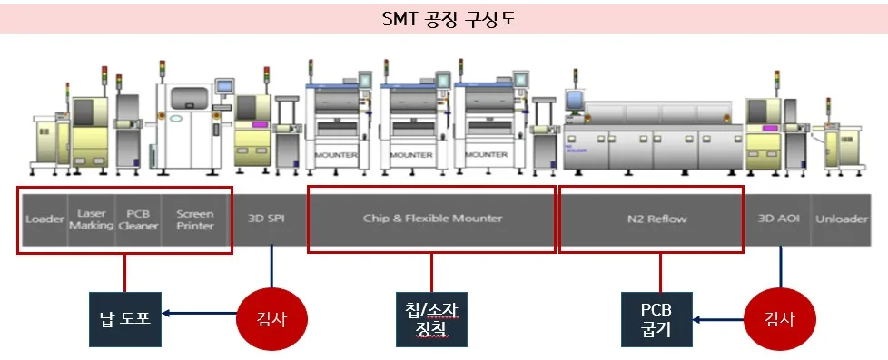
SMT 공정은 크게 PCB 베어 보드에 납을 도포하는 전 공정 그리고 납이 도포된 PCB 에 전자 부품들을 실장 하는 후공정으로 구분할 수 있다. 전 공정은 비어 있는 PCB 베어 보드를 ‘Loader’라는 장비를 통해 생산 라인에 투입하고, ‘Laser Marking’ 장비가 베어 보드 위에 전기 회로를 그려준다. 그 후 ‘Screen Printer’ 장비에서 납을 회로에 맞게 잘 도포하면 ‘SPI’ 검사 장비가 납이 설계된 양에 맞게적절히 도포되었는지 검사를 하며 SMT 전 공정이 마무리된다. 후 공정에서는 ‘Mounter’ 장비를 통해 다수의 전자 부품을 PCB 보드에 장착하고, ‘Reflow’ 장비를통해 전자 부품들이 PCB 에 고정이 될 수 있도록 열을 통해 구워 준다. 그 후 AOI 검사장비를 통해 전자 부품들이 설계에 맞게 정확한 위치에 실장 되었는지 검사하며 SMT 후 공정이 마무리된다.
[그림 8] SMT 공정 구성도 (출처: 경제적 자유를 위한 공부 및 본인 작성)
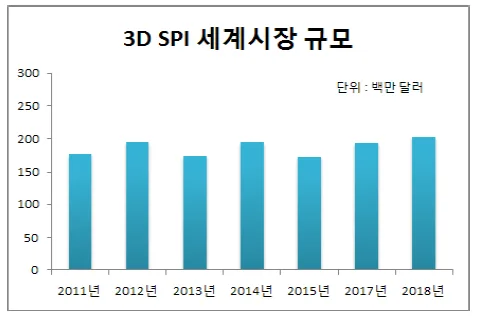
2.2.2 Solder Paste Inspection (SPI)
고영테크놀러지는 SMT 전 공정에서 PCB 에 도포된 납이 정확한 위치에, 정확한두께로 도포되었는지 검사하는 SPI 검사 장비 개발을 시작으로 SMT 산업 내 검사장비 시장에 진입하였다. SMT 공정에서 발생하는 불량 중 불량률이 가장 높은 불량유형은 납 도포와 관련되어 있다. 납이 조금만 옆으로 번져도 쉽게 회로가 손상되어완제품 품질에 직접적인 영향을 주기 때문에 SPI 검사 공정은 SMT 공정 전체의
수율을 결정하는 중요한 공정이다 (Surface Mount Technology Association, 2000).
글로벌 SPI 검사 장비 시장 규모는 약 2,000 억 수준으로 크지 않은 시장이지만, 부가가치가 높고 전자 제품을 제조하는 기업은 무조건 도입하는 필수 공정이자장비이다. 해당 시장에서 고영테크놀러지는 2006 년부터 현재까지 글로벌 시장점유율 50% 이상을 유지하며 독점하고 있다.
[그림 9] 글로벌 SPI 시장 규모 (출처: 한국기업데이터)
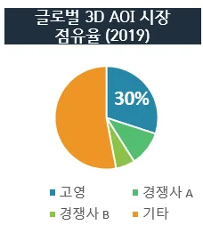
2.2.3 Automated Optical Inspection (AOI)
고영테크놀러지는 SMT 전 공정의 SPI 검사 시장을 넘어, 2010 년 SMT 후 공정의 AOI 검사 장비 분야로 사업을 확장하였다. AOI 검사장비 출시 만 3 년 만에 글로벌 AOI 시장 점유율 1 위를 달성하며, SMT 전체 검사장비 글로벌 시장 점유율 1 위를달성하였고 현재까지 유지 중에 있다.
AOI 공정은 PCB 보드 위에 전자부품 등이 설계에 따라 정위치에 장착이 잘되었는지, 고정 상태는 어떠한지를 검사하는 장비이며, 글로벌 시장 규모는 앞서언급한 SPI 시장의 약 2 배 정도로 3~4 천억 수준의 규모를 가지고 있다. 해당시장에서 고영테크놀러지는 2013 년부터 글로벌 시장 점유율 30% 이상을유지하며 글로벌 1 위 기업으로 사업을 영위 중이다.
[그림 10] 글로벌 AOI 시장 규모 (출처: 한국기업데이터)
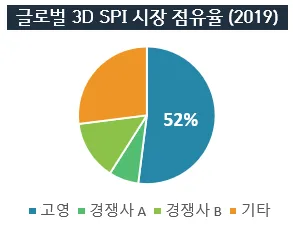
SMT 검사장비 시장 내 주요 경쟁사로 미국의 Cyberoptics, 일본의 CKD, 대만의 TRI 가 존재하고 각각 약 10% 수준의 시장 점유율을 점유하고 있는상황이다. 미국의 Cyberoptics 사가 검사 장비 시장에 가장 먼저 뛰어들고 2D 기반 검사 장비가 주를 이루던 시기에 글로벌 선두 기업이었으나, 현재고영테크놀러지가 기술력으로 시장을 장악하고 타 경쟁사들은 Low-end 장비를생산하며 사업을 영위하는 것으로 알려졌다 (KDB 대우증권, 2013).
[그림 11] 글로벌 SMT 검사 장비 시장 점유율
(출처: 고영테크놀러지 2019 년 사업보고서)
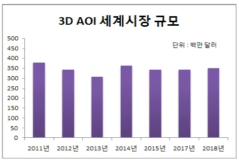
제 3 장 이론적 배경
3.1 Jobs to be done
Jobs to be done 은 하버드 비즈니스 스쿨의 Levitt 교수가 최초 제시한 개념으로
2005 년 Clayton M. Christensen 교수가 파괴적 혁신을 실행할 때 필요한 보완적개념으로 발전시키며 유명해진 이론이다. Jobs to be done 에서 정의하는 Job 은고객이 제품 혹은 서비스를 도입하여 달성하고자 하는 과업으로 정의되고, 이는 당장해결책이 없어 달성하기 불가능한 과업으로 정의된다. 과업은 단순히 기술/기능으로해결함을 넘어서, 고객의 감성적, 사회적, 열망적 용무까지 고려되어야 비로소진정한 고객의 unmet needs 를 찾고 이를 기회로 삼을 수 있다. 따라서, 기업은고객이 “무엇”을 원하는지 매몰되어 기술 혹은 사업 전략으로 해결하기보다, 현재고객이 마주하고 있는 상황을 이해하고 고객이 “왜” 제품 혹은 어떤 서비스를구매하고자 하는지 정확하게 이해하고 파악하여 제품/서비스화하는 것이 좋은혁신으로 정의하고 있다.
3.2 Bowling Alley Strategy
“Crossing the Chasm”의 저자 Geoffrey A. Moore 교수가 캐즘 극복을 위해제시한 전략 중의 하나이다. 캐즘은 첨단 기술을 수용하는 반응이 상이한 고객집단의 존재로 발생하며, 가장 깊은 간극은 조기 수용자 그룹과 조기 다수층 그룹사이에 발생한다. 기업은 결국 가장 깊은 캐즘을 극복하고 주류 시장인 조기 다수층그룹 시장에 진입해야 성장하는데, 실용 집단인 조기 다수층 그룹은 자신과 비슷한주변인들의 검증이 없으면 구매 의사결정을 내리는데 굉장히 보수적인 성향이 있다. 따라서, Moore 교수는 Bowling Alley Strategy 를 제시하였고, 이는 볼링을 칠 때맨 앞의 핀만 쓰러트리면 뒤에 핀들도 자연스럽게 쓰러지는 원리를 차용한 것이다. 볼링의 원리와 같이 검증된 니치 마켓 혹은 고객을 타겟하고 그들의 요구사항을집중적으로 수용하여 제품을 완전 완비제품으로 고도화해 최소한의 실용주의자고객을 확보해서 전체 주류 시장으로 확장하자는 전략이다.
3.3 Architecture Positioning Strategy
후지모토 다카히로 교수의 아키텍처 포지셔닝 전략 이론은 크게 기업의 자사 제품형태와 고객 제품의 형태가 인테그럴 속성인지 혹은 모듈 속성인지에 따라 4 가지유형으로 아키텍처 포지션을 구분한다. 인테그럴 유형은 부품 간의 미세조정을 통해설계 및 제작되는 반면 모듈 유형은 부품들의 조합/조립을 기반으로 제작된다는특징이 있다.
후지모토 다카히로의 아키텍처 포지션은 아래와 같이 구분되며, 기업은 조직능력과 시장 환경 구조에 맞게 적절한 전략적인 아키텍처 포지셔닝이 필요하다는이론이다.
1. 내부 인테그럴 – 외부 인테그럴 유형
부품 설계를 미세조정하여 제품마다 최적화 설계하고, 고객 제품에인테그럴이 필요한 환경 (고객사의 제품에만 사용하기 위해 주문제작된 제품)
높은 기술력이 요구되나 수익성이 낮다는 특징이 있음
2. 내부 인테그럴 – 외부 모듈 유형
부품 설계를 미세조정하여 제품마다 최적화 설계하나, 고객제품에는 모듈형으로 범용적으로 사용 및 공급되는 환경 표준품으로 판매되기 때문에 수익성이 높음
3. 내부 모듈– 외부 인테그럴 유형
제품은 모듈형으로 설계 및 개발되었지만, 제품을 사용하는 고객의제품은 인테그럴인 경우 낮은 코스트를 실현과 동시에 고객의 특수한 니즈에 부응 가능
4. 내부 모듈– 외부 모듈 유형
제품 및 최종 사용 제품 모두 표준 모듈/제품화 원가 경쟁력이 중요한 상황
제 4 장 혁신 사례 연구
4.1 시장 진입기
고영테크놀러지가 창업한 시기인 2000 년대 초반에는 아래 [그림 12]에서삼성전자 휴대폰의 변천사를 볼 수 있듯이 전자제품의 소형화, 경량화, 고기능화가곧 기업의 핵심 경쟁력인 시대였다. 전자제품의 소형화에 대한 노력은 SMT 공정에서얼마나 높은 밀도로 PCB 보드를 만들어 낼 수 있는지가 관건이었다. 그 이유는 아래
[그림 13]에서 볼 수 있듯이 휴대폰의 크기가 거의 절반 수준으로 줄었으나, 휴대폰
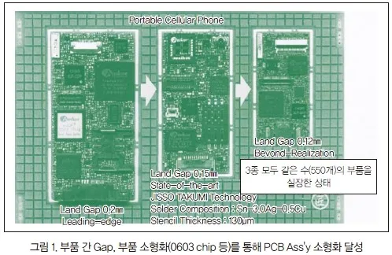
PCB 에 장착된 전자부품 수는 휴대폰/PCB 크기와는 무관하게 모두 같은 수의전자부품이 PCB 에 장착되기 때문이다. 따라서, SMT 의 고밀도화 혁신 없이는초일류 전자제품을 구현하는데 한계가 존재하던 시절이었기에, SMT 공정의고밀도화 실장 기술이 강조되던 시절이었다.
[그림 12] 삼성전자 휴대폰 변천사 (출처: 매일경제 2010)
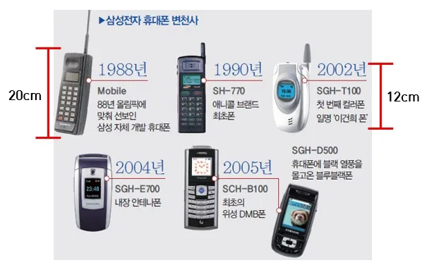
[그림 13] 삼성전자 휴대폰 내 PCB 크기 변천사 (출처: 문영준 2005)
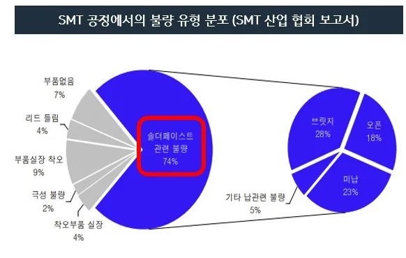
PCB 고밀도화를 위한 SMT 기술이 강조됨과 동시에 1990 년 후반 IT 산업의호조에 따라 전자제품 제조업 역시 호황기를 누렸고, SMT 시장도 급진적인 성장을맛보았다. 비록 닷컴버블로 인해 SMT 시장이 제자리를 찾아왔지만 2000 년까지는매년 3.5~4 조 원 사이의 시장 크기를 자랑하며 시장이 빠르게 성장하였다. 그중심에는 실질적으로 PCB 의 고밀도화를 실현할 수 있는 납 도포 printer 와전자부품을 PCB 에 실장 하는 mounter 공정이 있었고, 상대적으로 검사 공정의성장은 미미하였던 것으로 추정된다. 그 이유는 printer 와 mounter 공정에는대기업 위주로 시장이 형성 및 성장했지만, 검사 장비 공정의 글로벌 1 위 기업은당시 연 매출이 약 130 억 정도의 영세한 기업이었기 때문이다.
[그림 14] 2000 년대 글로벌 SMT 시장규모 및 주요 참여자
(출처: 한국전자산업진흥회 2003, Metrology World 2000)
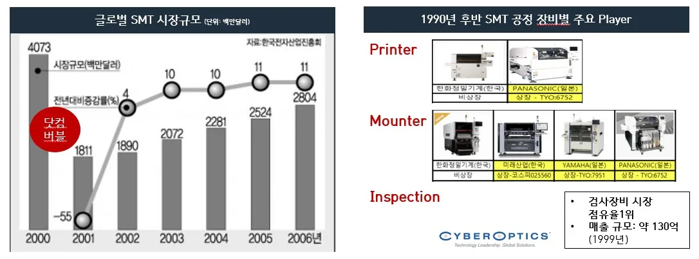
4.1.1 고객 니즈 기반의 제품 혁신
2000 년도 Surface Mount Technology Association (“SMT 산업 협회”)에서발행한 리포트가 SMT 공정 내 검사 장비 시장 성장에 시발점이 되었다. SMT 산업
협회 보고서에 따르면 PCB 가 소형화됨에 따라 다양한 불량 유형이 발생하고 있는데, 약 74%의 불량이 납 도포 공정, 즉 SMT 전 공정에서 발생한다는 보고서였다. 당시 Six Sigma 품질 경영의 중요성을 강조하던 상황이었고, SMT 산업 협회 보고서결과와 맞물려 SMT 공정 내 검사 장비 시장은 매년 높은 성장세가 기대되었다.
[그림 15] SMT 공정 내 발생하는 불량 유형 분포도
(출처: Surface Mount Technology Association, 2000)
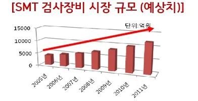
[그림 16] SMT 검사장비 시장 규모 예측치 (출처: 서울대투자연구회, 2009)
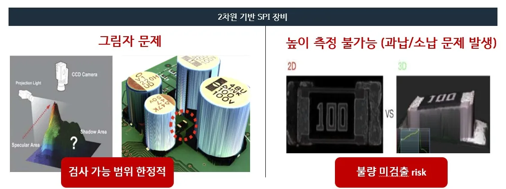
시장의 수요가 폭발적으로 늘어남에도 불구하고 기존 검사 방법과 검사 장비로는고밀도화된 PCB 를 정확하게 검사하는 것은 불가능에 가까웠다. 기존 검사 방법은육안 검사자를 활용하거나 2 차원 기반의 SPI 검사 장비를 활용하였다. 하지만, PCB 가 소형화됨에 따라 사람의 눈으로는 미세한 불량을 검출할 수 없게 되었고, 2 차원 기반 검사장비는 빠른 검사가 가능하다는 장점이 있었지만, 도포된 납의높낮이를 측정할 수 없고, 그림자, 반사광, 장애물, 측정 범위 등 심각한 기능적한계가 존재하여 시장이 요구하는 수준의 불량 검출률을 달성할 수 없었다.
구체적으로 아래 [그림 17]에서 볼 수 있듯이 기존 2 차원 기반 SPI 검사장비는검사 대상 위에서 카메라로 촬영하여 획득한 2D 영상 데이터를 통해 납의 위치가정확한지 여부는 검사할 수 있었지만, 납이 과도하게 혹은 덜 도포되었는지 여부를확인할 수 없는 치명적인 단점이 있었다. 납이 과하게 도포되는 경우 PCB 에 실장된 전자 부품의 손상을 야기하고 전기적 결함 등을 초래하여 전기적 오작동으로인한 전자제품 품질에 직접적인 영향을 주는 중요한 검사 포인트이다. 납이 덜
도포되는 경우 역시 전기적인 연결이 충분히 이루어지지 않게 되어 전자제품품질에 영향을 준다.
[그림 17] 2 차원 기반 SPI 검사 장비 한계점 (출처: 한국기업데이터, 2019)
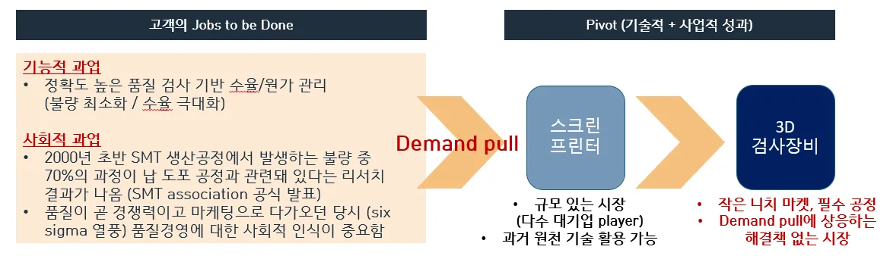
이처럼 품질 경영이 중요하던 당시 3 차원 기반 검사장비에 대한 고객의 니즈는명확하였고 demand pull 이 충분하였으나, 기술이 뒷받침되지 못하고 있던 상황을고영테크놀러지는 기회로 삼았다. 고영테크놀러지는 SMT 공정 중 납 도포 프린터에과거 경험이 있는 구성원들로 창업한 회사로, 최초 사업 모델은 납 도포 장비인스크린 프린터였다. 이는 매우 규모 있고 개발자 입장에서 과거 경험을 통해 더욱수월하게 사업화할 수 있었던 사업이었음에도 불구하고 창업자 고광일 대표는 창업초기 3 개월 동안 삼성전자와 LG 전자 앞에서 엔지니어들의 니즈를 알아내기 위해거주하였다. 창업 초반 3 개월간 현직자 인터뷰를 통해 도출한 고객의 기능적 과업은결국 SMT 공정에서 정확도가 높은 품질의 검사였으며, 이를 통해 불량을 최소화하고수율은 극대화하는 것이 고객의 니즈였음을 확인하였다. 또한, 사회적으로 Six Sigma 품질 경영이 소비자 입장에서 중요한 구매 의사 결정 포인트로 여겨지던시기였기 때문에, 3D 기반 검사장비에 대한 강력한 unmet needs 가 있음을 확인할수 있었다. 이러한 고객의 과업을 명확하게 이해하고 정의한 고영테크놀러지는과감하게 기존 스크린 프린터 사업을 제쳐 두고 3D 기반 검사장비 사업으로 pivot 을하게 된다.
[그림 18] 고영테크놀러지의 Jobs to be done
(출처: 고경철의 인공지능, 2020, 대한상공회의소 2009 및 본인 작성)
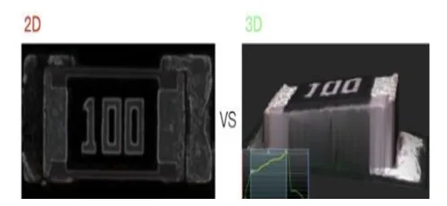
고영테크놀러지는 업계 최초로 Moire (“모아레”) 방식의 3 차원 기반 측정 기술을개발하여 기존 육안 검사자와 2 차원 기반 검사 장비의 한계점을 모두 기술적으로앞서 언급한 고객의 과업을 해결하였다. 모아레는 매우 오래된 기술로, 아래 [그림 19]에서 볼 수 있듯이 일정한 간격의 그물망 같은 물결 무늬를 검사 대상에 광학
프로젝션 장비를 통해 광을 쏘아준다. 이때 검사 대상 물체 높낮이에 따라 물결무늬가 굴곡지며 빛이 반사되고, 반사되는 각도 정보와 각 카메라와 프로젝트 사이그리고 프로젝터와 검사 대상 물체 사이의 거리 정보 등을 이용해서 광삼각법을이용하여 높낮이 정보를 구하는 원리이다.
[그림 19] 업계 최초 모아레 방식 3 차원 SPI 검사 장비 및 가치창출 내역
(출처: 한국기업데이터, 2019 및 본인 작성)
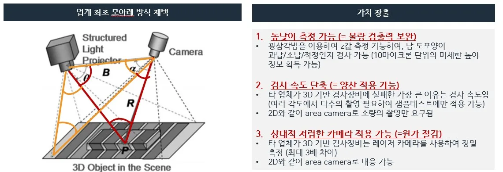
고영테크놀러지는 업계 최초로 모아레 기술을 적용한 3 차원 기반 검사 장비를개발하였고, 기존 2 차원 기반 검사 장비의 치명적인 한계점이던 도포된 납의높낮이를 측정을 가능하게 하여 불량 검출력을 높일 수 있었다.
[그림 20] 높낮이 측정 가능 3 차원 SPI 검사 장비
(출처: 한국기업데이터, 2019)
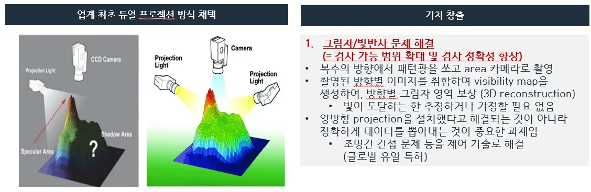
타 경쟁사 역시 3 차원 기반 검사 장비를 개발하던 시기였으나, 대부분 굉장히고가의 레이저 카메라로 검사 대상 물체의 다방변의 각도를 여러 번 촬영해서 3D 이미지를 획득하고 높낮이를 측정하는 구조로 양산 속도를 절대 맞출 수 없었고 주로
샘플 테스트에서만 사용되곤 하였다. 고영테크놀러지는 2 차원 기반 검사 장비에서사용되던 area camera 와 모아레 방식으로 검사 속도를 획기적으로 단축시키는데성공하여 세계 최초 3 차원 기반 SPI 검사 장비를 양산 적용하게 되었다. 또한, 업계최초로 듀얼 프로젝션 방식을 도입하여 [그림 21] 중 왼쪽 그림에서 볼 수 있던그림자 문제를 해결하였다. 이는 검사 가능 범위를 확대할 뿐만 아니라 검사정확도까지 향상시켜 기존 고객으로부터 demand pull 이 강하게 존재하였으나, 기술이 뒷받침되지 않아 발생하던 고객의 unmet needs 를 정확하게 기술로 해결할수 있었다.
[그림 21] 업계 최초 듀얼 프로젝션 방식 및 가치 창출 내역
(출처: 한국기업데이터, 2019, 고영테크놀러지 사업보고서 및 본인 작성)
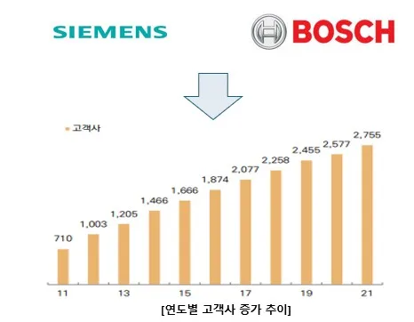
4.1.2 Beachhead Strategy
앞서 1 장에서 다룬 바와 같이 소재부품장비 산업은 기술 및 자본집약적성격을 가지고 있기 때문에 선천적으로 큰 규모의 기업들에게 유리한 측면이 있는반면 벤처기업이 기존 큰 규모의 기업들이 존재하는 시장에 진입하고 경쟁하며성장하기에 여러 한계점이 있다. SMT 산업은 연간 4 조 이상의 시장 크기의 규모있는 산업으로 일본의 파나소닉, 야마하 그리고 국내의 한화, 미래산업 등 대기업상장사들이 참여하는 시장이다. 하지만 SMT 내 검사 장비 시장은 연간 5 천억수준의 niche 하고 다른 공정 내 시장 대비 규모가 크지 않은 시장이었기에, 자본력이 높은 대기업과의 경쟁을 피할 수 있다는 성격을 고영테크놀러지는 잘파악하였다. 또한, 3 차원 기반 검사 장비가 고객의 unmet needs 를 충족시킨다면
시장의 규모는 기존 2 차원 기반 검사 장비 고객을 포함하여 육안 검사자를활용하거나 아예 검사 자체를 포기하던 non-consumer 시장까지 창출할 수있다는 굳은 믿음 하에 고영테크놀러지는 SMT 내 검사 장비 시장에 진입하였고결과론적으로 유효한 전략이었다.
고객 확보 관점에서도 앞서 1 장에서 다룬 바와 같이 소재부품장비 산업 내고객은 구매 의사 결정에 굉장히 보수적인 성향이 짙기 때문에 확실한 레퍼런스가있는 기업을 선호하므로 이 역시 벤처기업에게 선천적으로 불리한 조건이다.
고영테크놀러지도 약 7 개월간 밤낮을 새워가며 개발한 세계 최초 3D 기반 SPI 장비가 바로 국내 대기업에 판매되어 바로 글로벌 시장의 고객을 타겟 하였으나별다른 성과를 낼 수 없었다. 이때 창업자 고광일 대표는 다시 한번 Beachhead Strategy 를 강조하였고, 이번에는 SPI 시장과 같은 특정 마켓이 아닌 특정 고객을타겟하는 전략을 세웁니다. 고광일 대표는 글로벌 탑 기업으로부터 인정받아야주류 시장 모두 움직일 것이라는 믿음 속에 무작정 손실을 보면서 수개월간 글로벌탑 제조기업 지멘스의 요구사항을 들어주며 3 차원 기반 SPI 장비를 고도화했다. 지멘스라는 글로벌 탑 제조기업이 요구하는 수준의 까다로운 과제를 성공적으로수행해 내자, 지멘스가 고영테크놀러지의 완전 완비 검사 장비를 선택하였고그다음은 순풍에 돛 단 듯 글로벌 기업들이 하나둘 고객이 되며 고영테크놀러지의성장이 본격적으로 시작되었다.
사례 연구 목적 1 번 research question 에 대한 결론은 고영테크놀러지는벤처기업이 소자본으로 도전할 만한 right niche market 을 잘 선정하였고, 기술이 뒷받침되지 않아 발생한 고객의 unmet needs 를 세계 최초 기술로충족시켰다. 또한, 사업적으로 기존 기술의 성능의 축을 전환시키며 non- consumer 시장까지 새롭게 창출하며 시장의 크기를 키웠으며, Bowling Alley Strategy 를 통해 단기간 내 주류 시장에 진입하고 창업 4 년 만에 글로벌 시장점유율 1 위를 달성할 수 있었다.
4.2 시장 확장기
고영테크놀러지는 앞서 세계 최초 3 차원 기반 SPI 검사장비를 통해 성공적으로시장에 진입하였고, 이를 기반으로 2008 년 코스닥에 상장에 성공하였다. 고영테크놀러지는 이에 안주하지 않고 2010 년 세계 최초 3 차원 기반 AOI 검사장비를 출시하며 1,000 억대 매출 돌파에 성공하는 등 본격적인 시장 확장기에접어들었다. 따라서, 고영테크놀러지의 글로벌 시장 확장 요인에 대한 연구를진행하고자 한다.
4.2.1 Bowling Alley Strategy (Beachhead market 활용)
고영테크놀러지는 고객의 unmet needs 를 기술 성능의 축을 기존 2 차원에서 3 차원 기반으로 변화시키며 SMT 공정 검사 장비 시장의 선도기업으로자리매김하며, 시장 우선적 경험을 바탕으로 선도기업의 이점을 온전히 누렸다. 먼저 영업 관점에서 제조업에서 검사 장비는 완제품 품질과 직결되고 이는 곧고객의 생존 문제이므로 신뢰성/안정성 등 레퍼런스가 제품의 가격보다 더 중요한구매 의사 결정 요소가 된다. 이러한 관점에서 고영테크놀러지의 SMT 공정 중 니치마켓으로 분류되던 검사 장비 시장 그리고 글로벌 탑 제조 기업인 지멘스를 타겟한 Bowling Alley Strategy 결과가 곧 제조업 영업에서 가장 중요한 레퍼런스가 되어많은 고객사를 유치하는 데 도움이 되었다. 2004 년 한 자릿수 고객사를 보유하던
고영테크놀러지는 2011 년 710 개 그리고 현재 약 3,000 개 고객사를 보유한 거대기업으로 성장하였다.
[그림 22] 연도별 고객사 증가 추이 (출처: 미래에셋증권, 2022)
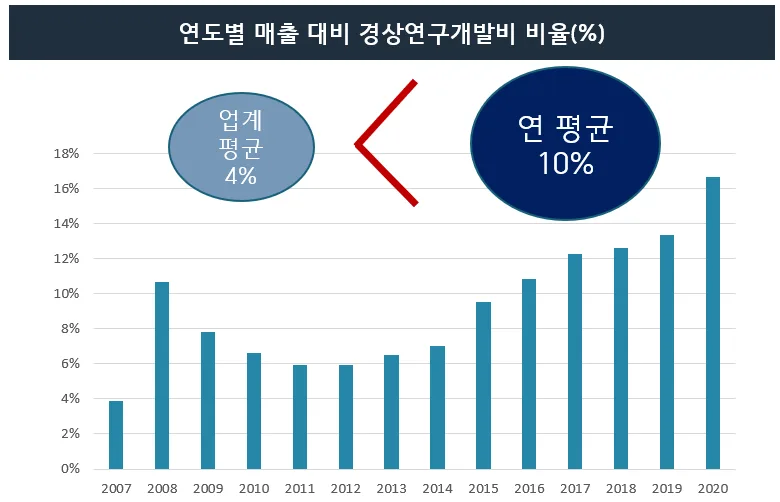
SPI 검사 장비 성능의 축을 변화시키며 SPI 시장에서 선도 기업 그리고 글로벌시장 점유율 1 위 기업으로 자리매김한 고영테크놀러지는 SMT 공정 내 다른 검사장비 시장인 AOI 검사 장비 시장에도 3 차원 기반 검사 장비를 상용화하며 후발주자로 참여하였다. AOI 시장에서 후발주자임에도 불구하고 SMT 공정 내 검사장비라는 산업 군 안에서 획득한 레퍼런스를 기반으로 고영테크놀러지는 빠른속도로 기존 AOI 시장 내 선도기업이 걸어온 중간 궤적을 한 번에 뛰어넘는 leapfrogging 효과를 실현하였다. SPI 와 AOI 모두 SMT 공정 내 사용되는 고가의검사 장비로 신규 장비에 대한 고객의 수요는 통상적으로 신규 공정을 증설할 때존재한다. 기존 사용하던 장비의 교체/대체는 이미 공정 간 다른 장비들과 물류연계 등 복잡하게 인테그럴화 되어 있어 특수한 상황이 아닌 이상 기존 장비로대체하는 것이 일반적이다. 따라서, SMT 공정을 운영하는 고객이 검사 장비를구매할 때 동일 제조사로부터 SPI 및 AOI 장비 모두를 구매하여 타 장비들과 한번에 결합 및 연동하는 것이 더 효율적이다. 따라서, 3 차원 기반 SPI 검사장비를통해 고객의 unmet needs 를 충족시키며 확보한 압도적인 레퍼런스는 AOI 시장에서 핵심적인 영업 포인트가 되었고, 고영테크놀러지는 AOI 시장에 후발주자로 진입하였음에도 불구하고 빠른 속도로 글로벌 AOI 검사 장비 시장에서도시장 점유율 1 위를 달성할 수 있었다.
앞서 언급한 바와 같이 고객은 기존 장비를 교체할 때에 신규 공급처를활용하기보다 기존 공급처의 기존 장비를 더 선호하는 성향이 있다. 따라서, 한번고객사에 납품되어 다른 공정 장비들과 결합 및 연동된 장비는 매우 높은 수준의 switching cost 및 고객 lock-in 효과를 기대할 수 있어, 고영테크놀러지는 글로벌시장 점유율 1 위 및 선도 기업의 이점을 확실히 누리며 지속적으로 확장할 수있었다. 또한, 앞서 언급한 요인들로 고영테크놀러지의 고객수가 기하급수적으로증가함에 따라 독점 및 규모의 경제 실현으로 높은 판매가격 유지가 가능한 동시에한계비용은 점점 낮아지는 사실상 표준 지위 속에서 사업을 확장할 수 있었다. 무엇보다 고객 데이터를 경쟁사 대비 압도적인 수준으로 확보하고, 고객 수요 기반기술적 발전을 실현하였다. 이를 통해, 고객의 현재 unmet needs 혹은 과업을충족시키는 존속적 혁신뿐 아니라, 원천 기술인 3 차원 기반 검사 장비를 통해 기존 SPI 및 AOI 기술 성능의 축을 변화시키는 혁신을 통해 시장을 넓히고 기존 기술을대체하는 혁신을 실현하며 고영테크놀러지는 글로벌 시장 점유율 1 위를 유지 및확장할 수 있었다.
4.2.2 아키텍처 포지셔닝 이동 전략에 따른 공정 혁신
고영테크놀러지는 선행연구(R&D)에 대한 투자를 공격적으로 수행하며 다수의특허를 출원/등록하였고, 이는 곧 기술적 진입 장벽이 되었다. 아래 [그림 23]에서볼 수 있듯이 연도별 매출 대비 경상연구개발비(R&D) 비율이 약 10%로 제조업평균 (약 4%)보다 월등히 높은 수준으로 선행연구를 수행하였음을 확인할 수 있다 (조선일보, 2020). 경쟁사와 특허 수를 비교해 봐도 경쟁사 대비 약 2~3 배 정도많은 수의 특허를 출원/등록하였음을 확인할 수 있다. 이러한 선행연구에 대한투자가 세계 최초 3 차원 기반 검사 장비라는 dominant design 을 선보이며 제품혁신에 성공할 수 있던 요인 중 하나로 해석할 수 있다.
[그림 23] 연도별 매출 대비 경상연구개발비 비율(%)
(출처: 고영테크놀러지 사업보고서 참고 본인 작성)
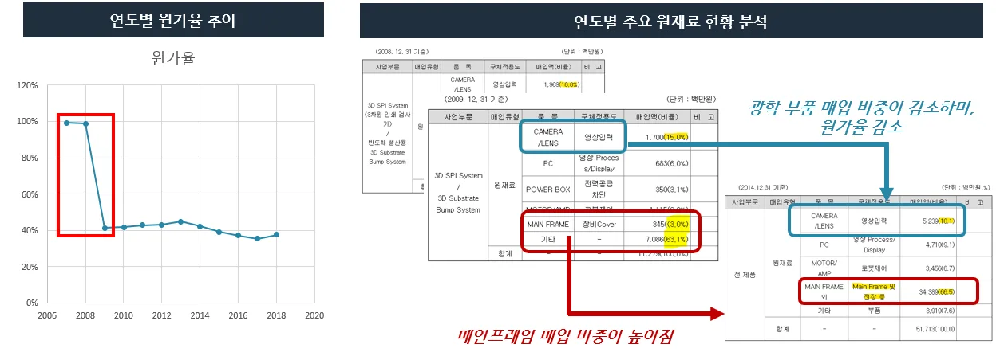
[그림 24] 연도별 경쟁사 특허수 비교 차트
(출처: Derwent innovation, 위즈도메인 참고 본인 작성)
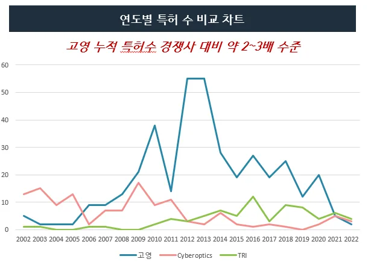
상기 [그림 24]을 보면 2005 년부터 2010 년 사이 구간 그리고 2011 년부터 2012 년에 큰 폭의 특허 수 증가가 있었음을 확인할 수 있다. 특허는 선행연구에대한 사후 결과물이자 신제품 출시 등 이벤트에 대한 선행적인 활동의 성격을 동시에갖고 있다. 따라서, 2005 년부터 2010 년 사이 구간은 2010 년 상용화된 세계 최초 3 차원 AOI 검사 장비에 대한 원천 기술과 관련된 특허가 주로 구성되어 있고, 2011 년부터 2012 년 사이에 특허는 2011 년 산업통상자원부 로봇산업 원천기술 개발사업에 선정된 고영테크놀러지의 의료 로봇과 관련된 특허가 주를 이룬다
(Techworld 2022).
아래 [그림 25] 연도별 원가율 추이를 보면 2000 년대 중반까지는 원가율이
거의 100%에 육박하였으나, 2007 년 이후 급격하게 원가율이 감소하는 추세를확인할 수 있다. 감소 사유를 고영테크놀러지의 사업보고서상 원재료 현황내역에서 유추하고자 하였고, 연도별 원재료 현황을 2007 년부터 보면 영상 입력도구인 카메라/렌즈/조명 등 광학기구의 매입 비중이 감소하는 반면에 장비를조립할 때 사용하는 프레임 등의 하드웨어 원재료 매입 비중이 높아짐을 확인할 수있다. 광학 기반의 검사 장비를 만드는 사업을 영위하기 때문에 매출이 증가하면카메라 등 광학 부품 매입도 비례적으로 증가함이 논리적이나 매입 비중이 줄어든점이 고영테크놀러지의 공정 혁신 요인으로 살펴보고자 한다.
[그림 25] 원가율 추이 및 원재료 원천 (출처: 고영테크놀러지 사업보고서)
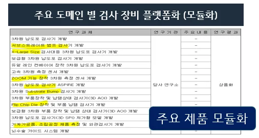
광학 관련 부품 매입의 감소 원인을 찾기 위해 원가율이 급격하게 줄어 2008 년이 전에 출원한 특허의 원문의 키워드를 보고 크게 3 차원 형상 측정 기술과 관련된특허는 원천 기술, 파장/조명/센서 등 최적의 광학계를 찾기 위한 요소 기술과관련된 특허는 광학계, 그 외는 기타로 분류하였다. 2008 년 이전에 국내 출원된특허는 총 34 건이며, 그중 18 건이 3 차원 검사장비 기술과 관련된 원천 기술 (예: 모아레 등)로 분류되고, 그 외 8 건이 광학계 요소 기술 (예: 다중파장, 광 출력장치, 백색광 등) 그리고 8 건의 기타로 구분되었다.
[그림 26] 특허 분류 (출처: 위즈도메인 참고 본인 작성)
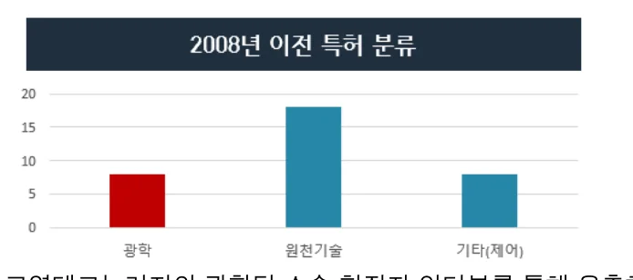
또한, 고영테크놀러지의 사업보고서상 3 차원 측정 센서 개발에 성공하였다는공시 정보와 고영테크놀러지의 광학팀 소속 현직자 인터뷰를 통해 유추하건대고영테크놀러지는 선행연구를 통해 광학계 요소 기술을 지속해 확보 및 고도화하고있으며, 이를 통해 주요 광학 부품을 자체 개발 및 내재화에 성공하여 전체 검사장비 시스템의 성능은 물론 원가까지 절감하는 효과를 누린 것으로 해석된다. SPI 혹은 AOI 장비는 최종 검사 제품 domain 별 미세 조정을 통한 개발이필요하여 후지모토 다카히로 교수의 아키텍처 포지셔닝 관점에서 내부 인테그럴 / 외부 인테그럴 형태의 포지션 성격을 가지고 있다. 해당 포지션은 고객사의 요구스펙에 따라 부품 설계를 미세 조정하고 최적화 설계해야 하는 높은 기술력과공수가 들어가는 구조로 높은 기술력이 요구되지만, 수익성이 높지 않다는 단점이있다. 따라서, 수익성 극대화라는 기업 목적을 달성하기 위해서는 공통의 부품 등을활용하여 고객 대응을 하는 내부 모듈화를 실현함이 중요하다. 내부 모듈 / 외부인테그럴은 낮은 원가를 실현함과 동시에 고객의 특수한 니즈를 부응하며 높은판가를 유지할 수 있어 수익성을 극대화할 수 있는 포지션이다. 상기 특허 분석 및현직자 인터뷰를 통해 확인한 바와 같이 고영테크놀러지는 주요 부품을 내재화하고모듈화하였음을 확인할 수 있었고, 사업보고서에 따르면 각 주요 고객사 domain (예: 반도체 검사기) 시장에 대응하기 위한 검사 장비 제품 플랫폼화에성공하였다고 공시한 점을 보았을 때 고영테크놀러지는 아키텍처 포지셔닝 이동을통해 공정 혁신에도 성공하였다고 해석할 수 있으며, 이것이 글로벌 시장 점유율 1 위를 유지하고 지속적으로 확장할 수 있었던 주요 원인이라고 볼 수 있다.
[그림 27] 주요 도메인 장비 플랫폼화 (출처: 사업보고서 참고 본인 작성)
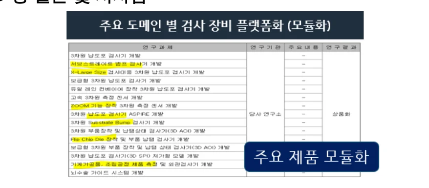
제 5 장 결론 및 시사점
고영테크놀러지는 SMT 공정에서 벤처기업이 경쟁할 수준의 right niche market 을 제대로 선정하였고, 기술로 충족되지 않은 고객의 과업을 정확히
파악하여 이를 기존 기술의 성능의 축을 전환하며 충족시켰다. 또한, 글로벌 탑기업을 타겟하여 레퍼런스를 확보하고 이를 leverage 하여 전체 시장으로진입하는 Bowling Alley Strategy 이 단기간 내 주류 시장에 진입하는데 유효한전략이 되었다.
확장기에서 고영테크놀러지는 앞서 Bowling Alley Strategy 로 획득한레퍼런스를 기반한 선도기업 이점을 톡톡히 누렸으며, 공격적인 선행연구 투자를통해 또 다른 제품 혁신에 성공하며 시장을 확대하였고, 자체 제작 장비 플랫폼화및 이를 위한 부품 모듈화/내재화 작업을 통해 아키텍처 포지셔닝을 기존 내부/외부인테그럴에서 내부 모듈/외부 인테그럴 포지션으로 성공적으로 이동하며 공정혁신에도 성공하였다.
고영테크놀러지 사례를 통해 자본집약적 성격을 가지고 있는 소재부품장비산업 내 벤처기업은 고객의 수요는 있지만 기술로 해결되지 않고 해결될 수 없다고판단되는 고객의 과업 혹은 unmet needs 를 소자본으로 도전할 수 있는 기술과시장을 탐색하는 것이 중요하며, 고객의 unmet needs 를 해결하는 기술은 기존기술 성능의 축을 완전히 전환하는 기술이어야 경쟁력이 있음을 확인할 수 있었다. 또한, 사업 관점에서는 B2B 시장에서 고객 레퍼런스가 무엇보다 중요한 영업도구임을 확인할 수 있었고, 주류 시장에 진입하기 위해서는 확실한 니치 마켓 혹은고객을 Bowling Alley Strategy 를 잘 수립하여 선택과 집중하는 것이 유효한전략임을 시사점으로 얻을 수 있었다.
시장 확장기에서는 초기 성장에 안주하지 않고 끊임없이 미래 먹거리를 위한그리고 공정 혁신을 위한 선행 연구에 대한 투자가 매우 중요하다는 점 그리고 이를계획하고 실행할 수 있는 기술 경영 역량 역시 매우 중요한 시기임을 확인할 수있었다. 따라서, 통상적으로 경영 및 사업적인 역량을 기술 역량에 비해 중요성을낮게 설정하는 딥테크 벤처기업은 의사결정 시 기술 외 경영 관점에서도 중요하게바라볼 필요가 있다는 시사점을 얻을 수 있었다.
Reference
[1] 송경호, 한국 제조업의 생산성 성장과 산업 역동성, 한국조세재정연구원 재정포럼, 2022.
[2] 한국 제조업 비중, 미영의 2~3 배코로나 위기 버킴목 됐다, 중앙일보, 2020. [3] 일본 수출규제 2 년 더 끈끈해진 대중기, 산업 자생력 끌어올렸다, 한겨례, 2021. [4] 국민기업정부가 만드는 경쟁력 있는 히든 챔피언 수부장 대국민보고서, 중소벤처기업부, 2020.
[5] 소부장 특례, 외면받전 ‘제조업’ 무대로 불러내다, 더벨, 2023. [6] 세계 최고 수준의 3D 측정 검사기술 보유 기업 고영(098460), 한국기업데이터, 2019 [7] SMT 공정 라인 설명 및 고영테크놀러지 간단 단상, 경제적 자유를 위한 공부, 2020. [8] SMTA International 2000 conference program, Soldering & Surface Mount Technology Vol. 12, 2020 [9] 3D AOI 장비 매출 본격화에 주목!, KDB 대우증권, 2013 [10] Know your customers’ Jobs to Be Done, Clayton M. Christensen, Taddy Hall, Karen Dillon, David S. Duncan, Harvard Business Review, 2016 [11] A dynamic model of process and product innovation, James M. Utterback, William J. Abernathy, 1975 [12] Crossing the chasm, Moore G.A & McKenna R, 1999 [13] 모노즈쿠리 경영학, 후지모토 다카히로, 2007 [14] 사업보고서, 고영테크놀러지, 2008~2023 [15] 작은 고추가 매운 이유, SNU Midas Investment Club, 2009 [16] 과거와 현재, 미래가 모두 좋은 기업, 신한금융투자, 2018 [17] 작은 고추가 매운 이유, SNU Midas Investment Club, 2009 [18] Mobile 제품 소형화를 위한 고밀도 실장 기술의 개발 필요성, 문영준, 2005 [19] 3 차원 납도포검사기 세계 1 위 고영테크놀러지, Economy Chosun, 2011 [20] 포브스아시아 선정 아시아 200 대 유망기업 고영테크놀러지, 중앙일보, 2015 [21] 볼링 앨리(Bowling Alley) 전략 경영교실, LG 주간경제, 2005 [22] 존속적 혁신과 파괴적 혁신 창조경영, 신한 FSB 연구소, 2005 [23] 2020 코스닥라이징스타 선정기업, NICE 디앤비, 2020 [24] 인생도전! 창업스토리 고영테크놀로지 고광일 사장, 중앙일보, 2011 [25] 깐깐한 ‘지멘스’뚫은 기술력13 년째 압도적 세계 1 위, 문화체육관광부국민소통실, 2019 [26] 사례로 보는 한국형 히든 챔피언, 대한상공회의서, 2009